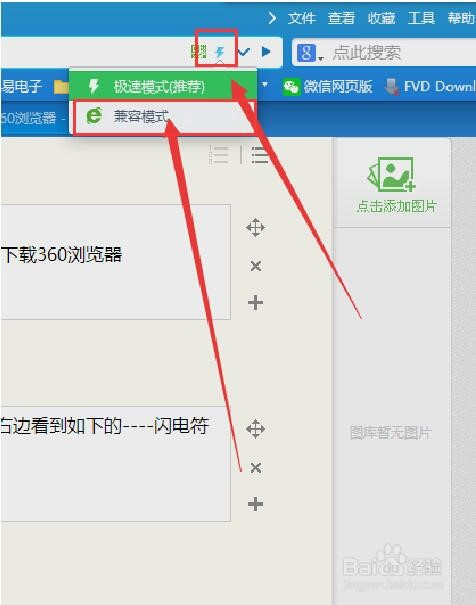
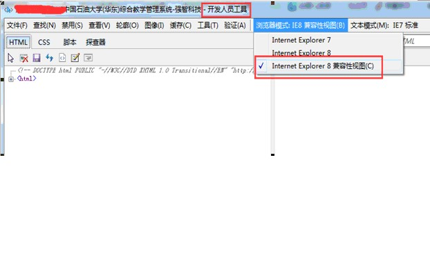
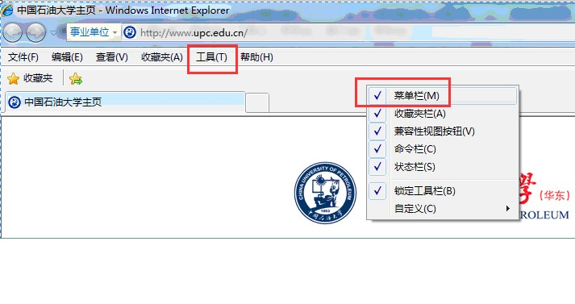
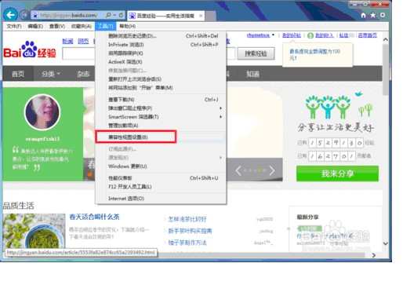
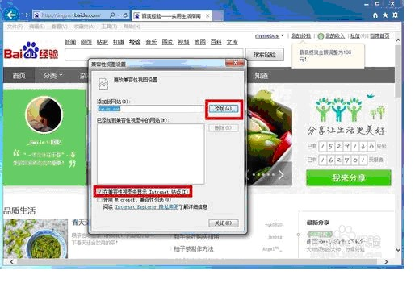
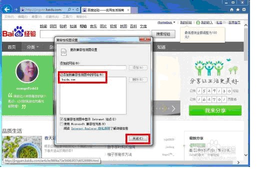
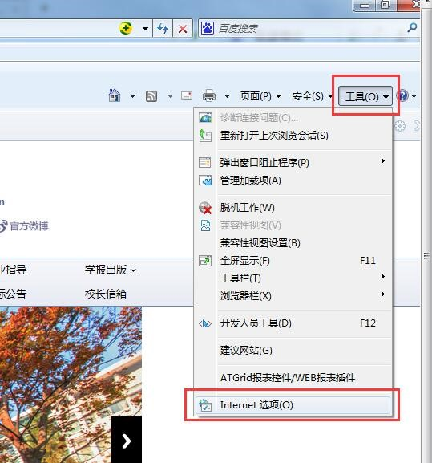
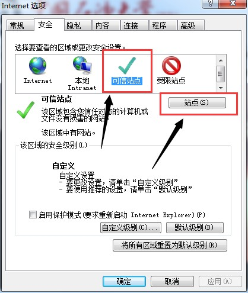
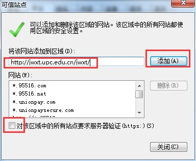
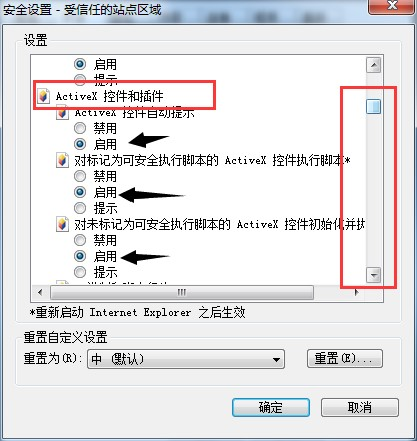

教务系统兼容性视图设置办法
如果您的教务系统无法正常查看或则操作，可以尝试“兼容性视图设置”!
我是学生，什么时候需要我这样做？
① 无法正常查看学籍卡片；
② 学籍卡片照片不正常显示，而是显示“×”；
③ 无法正常查看成绩；
④ 其他无法正常操作教务系统的情况。
我是教师，什么时候需要我这样做？
① 无法自动计算总成绩，即总成绩总是为0；
② 无法选择行政班级，按照正常选择班级自由录入成绩；
③ 按照学号或者姓名排序后，总是显示读取数据有误等；
④ 其他无法正常操作教务系统的情况。
如果您遇上以上类似问题，那么请参考如下办法进行浏览器兼容性视图设置。
情况1：对于360等常用浏览器的设置：
打开浏览器，点击教务系统，选择用“兼容模式”登录教务系统即可。
说明：现在常用浏览器都有兼容模式和极速模式，而且极速模式常常为推荐模式，但是为了保证能正常使用教务系统，请在登录教务系统时，切换至兼容模式！如下图。

情况2：对于ie9&ie10的设置：
打开系统自带的IE浏览器，登录教务系统后，点击键盘中“F12”键；
将弹出对话框的“开发人员工具”页面中，“浏览器模式以及文本模式”修改为IE8兼容性视图，如下图。

点击红色框位置直接选择“IE8”即可，选择成功后，会显示为“浏览器模式：IE8”。选择成功后，关闭该设置页面，直接刷新页面重新进入教务系统即可。
情况3：对于ie11及以上浏览器的设置：
打开系统自带的IE浏览器，在浏览器上方点击右键，显示“菜单栏”，可见“工具”菜单。

进入教务系统，然后点击菜单栏的工具--兼容性设置！如下图所示。

点击兼容性视图设置页面的添加按钮，或者直接将网址（upc.edu.cn）输入至“添加此网络”框中，选择“添加”，如下图所示。

添加成功，在兼容性视图页面可以看到网站网址，如下图所示，说明已经设置成功。关闭并重启浏览器即可。

情况4：如果以上操作还是不可以，可以尝试以下操作——ie安全设置。
打开系统自带的IE浏览器，在浏览器右上角选择“工具”，选择“Internet 选项”。

点击“安全”，选择“可信站点”，再选择“站点”。

将教务系统网址（http://jwxt.upc.edu.cn/jwxt/）复制到“将网站添加到区域”，选择“添加”。注意，对话框下方，“对该区域的所有站点要求服务器验证”该对勾取消！最后，关闭该对话框。

回到“安全站点”管理页面，选择“自定义级别”，对“ActiveX控件和插件”部分，ActiveX相关的选项均启用即可（部分选项已经启用，只需要设置部分选项，一共大约十来个启用）。

提醒：以上设置请确认兼容性操作后，仍然无法正常使用教务系统（如导出成绩单等）的情况，同时必须在“可信站点”情况下进行设置。请勿对一般站点放开限制，以免电脑的不安全。